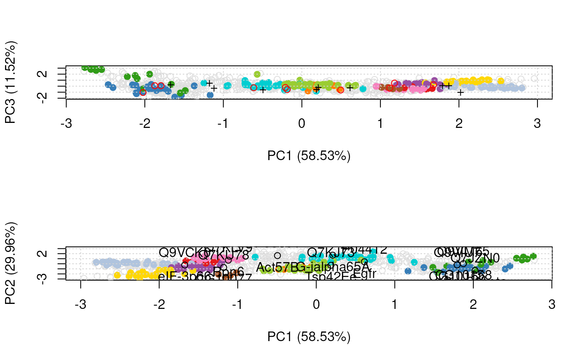
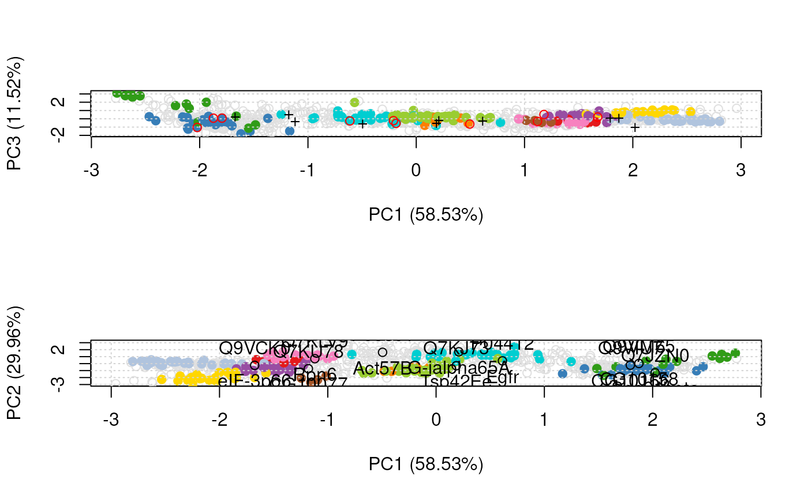

Highlight features of interest on a spatial proteomics plot
Source:R/plotting.R, R/plotting3.R
highlightOnPlot.RdHighlights a set of features of interest given as a
FeaturesOfInterest instance on a PCA plot produced by
plot2D or plot3D. If none of the features of interest
are found in the MSnset's featureNames, an warning
is thrown.
Arguments
- object
The main dataset described as an
MSnSetor amatrixwith the coordinates of the features on the PCA plot produced (and invisibly returned) byplot2D.- foi
An instance of
FeaturesOfInterest, or, alternatively, acharacterof feautre names.- labels
A
characterof length 1 with a feature variable name to be used to label the features of interest. This is only valid ifobjectis anMSnSet. Alternatively, ifTRUE, thenfeatureNames(object)(orrownames(object), ifobjectis amatrix) are used. Default is missing, which does not add any label.s- args
A named list of arguments to be passed to
plot2Dif the PCA coordinates are to be calculated. Ignored if the PCA coordinates are passed directly, i.e.objectis amatrix.- ...
Additional parameters passed to
pointsortext(whenlabelsisTRUE) when adding toplot2D, orspheres3dortext3dwhen adding theplot3D- radius
Radius of the spheres to be added to the visualisation produced by
plot3D. Default is 0.3 (i.eplot3D'sradius1* 3), to emphasise the features with regard to uknown (radius1 = 0.1) and marker (radius1* 2) features.
Examples
library("pRolocdata")
data("tan2009r1")
x <- FeaturesOfInterest(description = "A test set of features of interest",
fnames = featureNames(tan2009r1)[1:10],
object = tan2009r1)
## using FeaturesOfInterest or feature names
par(mfrow = c(2, 1))
plot2D(tan2009r1)
highlightOnPlot(tan2009r1, x)
plot2D(tan2009r1)
highlightOnPlot(tan2009r1, featureNames(tan2009r1)[1:10])
 .pca <- plot2D(tan2009r1)
head(.pca)
#> PC1 (58.53%) PC2 (29.96%)
#> P20353 0.2103374 1.6959266
#> P53501 -0.4940607 1.6207386
#> Q7KU78 -1.1794311 -0.7242185
#> P04412 0.6128549 0.3944441
#> Q7KJ73 0.1866756 -0.3007028
#> Q7JZN0 2.0228016 -1.3087061
highlightOnPlot(.pca, x, col = "red")
highlightOnPlot(tan2009r1, x, col = "red", cex = 1.5)
highlightOnPlot(tan2009r1, x, labels = TRUE)
.pca <- plot2D(tan2009r1, dims = c(1, 3))
highlightOnPlot(.pca, x, pch = "+", dims = c(1, 3))
#> Warning: "dims" is not a graphical parameter
highlightOnPlot(tan2009r1, x, args = list(dims = c(1, 3)))
.pca <- plot2D(tan2009r1)
head(.pca)
#> PC1 (58.53%) PC2 (29.96%)
#> P20353 0.2103374 1.6959266
#> P53501 -0.4940607 1.6207386
#> Q7KU78 -1.1794311 -0.7242185
#> P04412 0.6128549 0.3944441
#> Q7KJ73 0.1866756 -0.3007028
#> Q7JZN0 2.0228016 -1.3087061
highlightOnPlot(.pca, x, col = "red")
highlightOnPlot(tan2009r1, x, col = "red", cex = 1.5)
highlightOnPlot(tan2009r1, x, labels = TRUE)
.pca <- plot2D(tan2009r1, dims = c(1, 3))
highlightOnPlot(.pca, x, pch = "+", dims = c(1, 3))
#> Warning: "dims" is not a graphical parameter
highlightOnPlot(tan2009r1, x, args = list(dims = c(1, 3)))
 .pca2 <- plot2D(tan2009r1, mirrorX = TRUE, dims = c(1, 3))
## previous pca matrix, need to mirror X axis
highlightOnPlot(.pca, x, pch = "+", args = list(mirrorX = TRUE))
## new pca matrix, with X mirrors (and 1st and 3rd PCs)
highlightOnPlot(.pca2, x, col = "red")
plot2D(tan2009r1)
highlightOnPlot(tan2009r1, x)
highlightOnPlot(tan2009r1, x, labels = TRUE, pos = 3)
highlightOnPlot(tan2009r1, x, labels = "Flybase.Symbol", pos = 1)

## in 3 dimensions
if (interactive()) {
plot3D(tan2009r1, radius1 = 0.05)
highlightOnPlot3D(tan2009r1, x, labels = TRUE)
highlightOnPlot3D(tan2009r1, x)
}
.pca2 <- plot2D(tan2009r1, mirrorX = TRUE, dims = c(1, 3))
## previous pca matrix, need to mirror X axis
highlightOnPlot(.pca, x, pch = "+", args = list(mirrorX = TRUE))
## new pca matrix, with X mirrors (and 1st and 3rd PCs)
highlightOnPlot(.pca2, x, col = "red")
plot2D(tan2009r1)
highlightOnPlot(tan2009r1, x)
highlightOnPlot(tan2009r1, x, labels = TRUE, pos = 3)
highlightOnPlot(tan2009r1, x, labels = "Flybase.Symbol", pos = 1)

## in 3 dimensions
if (interactive()) {
plot3D(tan2009r1, radius1 = 0.05)
highlightOnPlot3D(tan2009r1, x, labels = TRUE)
highlightOnPlot3D(tan2009r1, x)
}